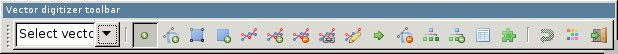

DESCRIPTION
Vector digitizing tool is
a wxGUI component intended for
interactive editing vector maps
(see v.edit for non-interactive
vector editing GRASS capabilities).
Currently, only 2D vector features (points, lines, centroids and
boundaries) can be edited.
Vector features can be selected using mouse or by query (e.g. minimal
vector line length). Vector features can be selected by bounding box
or simply by mouse click (based on 'Settings->General->Select
threshold' value).
Vector digitizer can be activated from Main toolbar in Map Display by
selecting "Digitize" from "Tools" combobox. Vector map to be edited
can be afterwards selected from digitizer toolbar ("Select vector map"
combobox, note that only vector maps from the current layer tree in Layer
Manager are available).
Vector digitizer can be alternatively also activated from contextual
menu in Layer Manager by selecting "Start editing" on selected vector
map in the layer tree.
New vector map can be easily created from digitizer toolbar by
selecting "New vector map" in "Select vector map" combobox. A new
vector map is created, added to the current layer tree in Layer
Manager and opened for editing. "Select vector map" combobox in
digitizer toolbar also allows switching easily between vector maps to be
edited.
NOTES
Dead (deleted) are internally only marked in the geometry file
as 'dead' but it remains there and occupies space. Any vector module
used afterwards on this vector map which really reads and writes
vector geometry (so not g.copy)
will writes only features which are 'alive'.
Added or modified vector features are snapped to
existing vector features ('Settings->General->Snapping', nodes or vertices)
based on 'Settings->General->Snapping threshold' value. To
disable snapping set the snapping threshold to '0'.
If the digitizer crashes for some reason you can repair the vector map
which was left open with the v.build module.
Digitizer toolbar



 Digitize new point
Digitize new point- Add new point to vector map and optionally define its
attributes.


 Digitize new line
Digitize new line- Add new line to vector map and optionally define its
attributes.


 Digitize new boundary
Digitize new boundary- Add new boundary to vector map and optionally define its
attributes.


 Digitize new centroid
Digitize new centroid- Add new centroid to vector map and optionally define its
attributes.


 Move vertex
Move vertex- Move selected vertex of linear feature. Thus shape of linear
feature is changed.


 Add vertex
Add vertex- Add new vertex to selected linear feature (shape not
changed).


 Remove vertex
Remove vertex- Remove selected vertex from linear feature. Thus shape of selected
feature can be changed.


 Split line/boundary
Split line/boundary- Split selected linear feature on given position to separate
vector features.


 Edit line/boundary
Edit line/boundary- Edit selected linear feature, add new segments or remove
existing segments of linear feature.


 Move feature(s)
Move feature(s)- Move selected vector features. Selection can be done by mouse or
by query.


 Delete feature(s)
Delete feature(s)- Delete selected vector features. Selection can be done by mouse
or by query.


 Display/update categories
Display/update categories- Display categories of selected vector feature. Category settings
can be modified, new layer/category pairs added or already defined pairs
removed.


 Copy categories / Duplicate attributes
Copy categories / Duplicate attributes
- Copy category settings of selected vector feature to other
vector features. Layer/category pairs of source vector features are
appended to the target feature category settings. Existing
layer/category pairs are not removed from category settings of the
target features.
- Duplicate attributes settings of selected vector feature to
other vector features. New category(ies) is appended to the
target feature category settings and attributes duplicated
based on category settings of source vector features. Existing
layer/category pairs are not removed from category settings of
the target features.

 Display/update attributes
Display/update attributes
- Display attributes of selected vector feature (based on its
category settings). Attributes can be also modified. Same
functionality is accessible from Main toolbar "Query vector map
(editable mode)".

 Additional tools
Additional tools-
- Copy features from (background) map
Make identical copy of
selected vector features. If background vector map
('Settings->General->Background map') is given copy
features from background vector map, not from the currently
modified vector map.
- Flip selected lines/boundaries
Flip direction of
selected linear features (lines or boundaries).
- Merge selected lines/boundaries
Merge (at least two)
selected vector lines or boundaries. The geometry of the
merged vector lines can be changed. If the second line from
two selected lines is in opposite direction to the first, it
will be flipped. See also
module v.build.polylines.
- Break selected lines/boundaries at intersection
Split
given vector line or boundary into two lines on given position
(based on v.clean,
tool=break).
- Snap selected lines/boundaries (only to nodes)
Snap
vector features in given threshold. See also
module v.clean. Note that
this tool supports only snapping to nodes. Snapping to vector
features from background vector map is not currently
supported.
- Connect two selected lines/boundaries
Connect selected
lines or boundaries, the first given line is connected to the
second one. The second line is broken if necessary. The lines
are connected only if distance between them is not greater
than snapping threshold value.
- Query tool
Select vector features by min/max length value
(linear features or dangles).
- Z-bulk labeling of 3D lines
Assign z coordinate to 3D
vector lines in bounding box.
- Feature type conversion
Change feature type of selected
geometry features. Points are converted to centroids,
centroids to points, lines to boundaries and boundaries to
lines.

 Undo
Undo- Undo previous operations.


 Settings
Settings- Dialog for vector digitizer settings.


 Quit digitizing tool
Quit digitizing tool- Changes in vector map can be optionally discarded when
digitizing session is quited.
SEE ALSO
v.edit,
v.category
See also Wiki page.
AUTHORS
Martin Landa, FBK-irst, Trento, Italy
$Date$